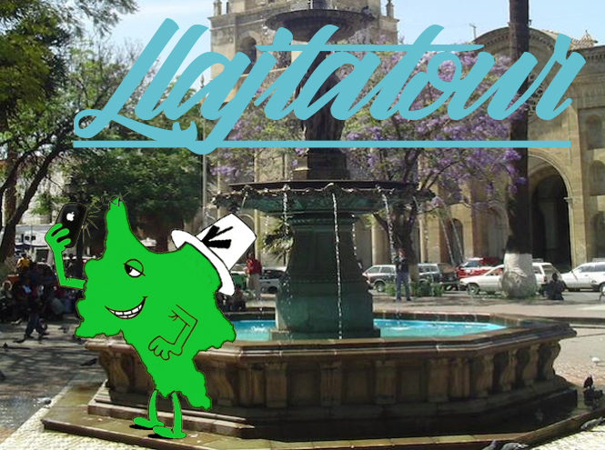

Introducción

El departamento de Cochabamba es una región con una diversidad singular, ya que cuenta con tres áreas geográficas: la región andina, el trópico y valles. A su vez, esta última se divide en valle bajo, central y alto que, a diferencia de las otras, cuenta con una variedad en atractivos que la pueden convertir en un interesante foco turístico regional.
Valle Alto

El valle alto cochabambino está compuesto por 5 provincias y 16 municipios autónomos que son: Santiváñez, Arbieto, Tarata, Anzaldo, Sacabamba, Tolata, Cliza, Toco, San Benito, Punata, Villa Rivero, Tacachi, Villa Gualberto Villarroel, Arani y Vacas.
Valle Bajo

Su privilegiada ubicación a los pies de la cordillera del Tunari permite a este amplio valle contar con una abundante provisión de aguas claras que marcan la diferencia en sus productos agrícolas. Hermosos mantos verdes se extienen en las planicies de los campos agrícolas.
Este atractivo está rodeado de hermosos bosques aptos para el camping y trekking. La cordillera del Tunari es para muchos la mayor atracción del año cuando ésta cubre sus picos de un extenso manto blanco de nieve.
Chapare
En el trópico cochabambino se encuentra la provincia Chapare su capital Sacaba, su terrritorio mide 12.445 km2 con una población de 227.404 habitantes, una de las regiones mas hermosas del país situada al norte de la capital del departamento de Cochabamba entre las majestuosas montañas de la Cordillera de Los Andes y los cálidos llanos amazónicos, clima tropical, hermosos paisajes, gran variedad de flora y fauna, es un refugio natural para animales salvajes y pueblos indígenas que continúan con su forma de vida tradicional y sus costumbres. La riqueza en flora y fauna se desarrolla gracias a la existencia de ríos, lagunas y frescas pozas, muchas de ellas transitorias y formadas por las crecidas que inundan las llanuras ofreciendo escenarios increíbles y cada vez diferentes, sus ríos se extienden a lo largo llegando al río amazonas, en sus bosques se puede encontrar árboles como la mara, caoba, cedro y laurel.